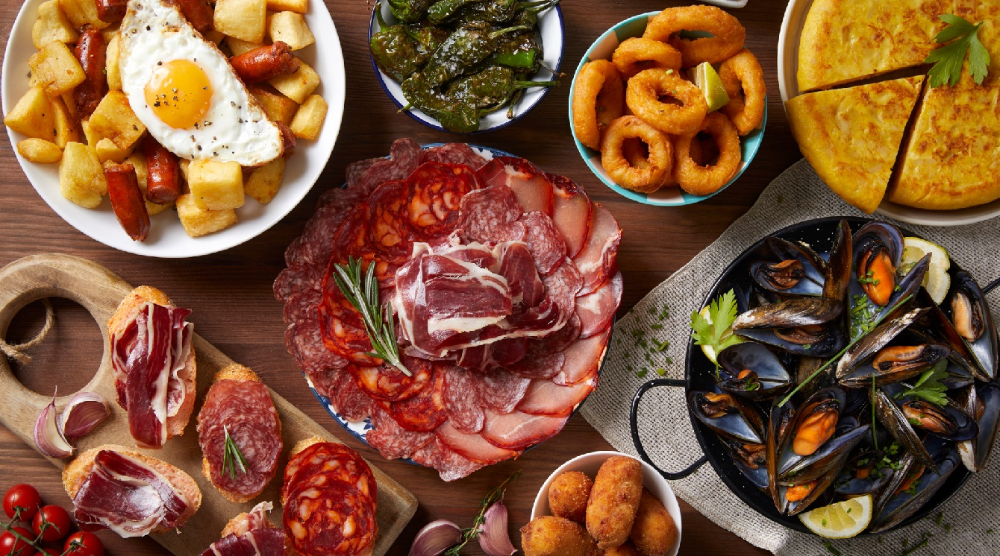
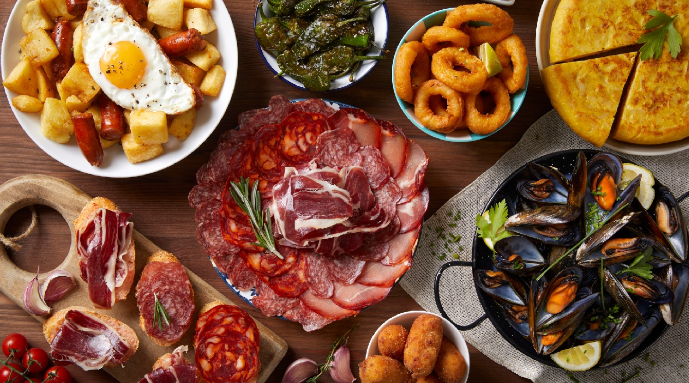
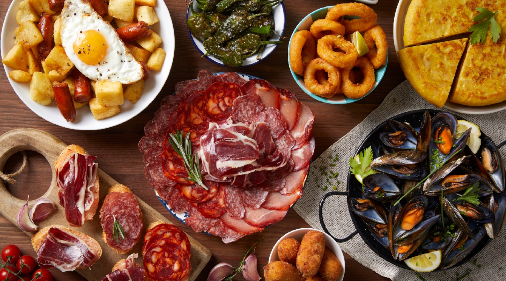
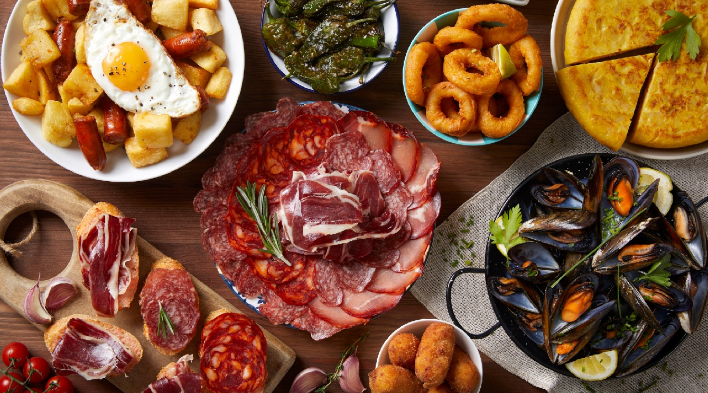

Casa Juan es un bar ubicado en el hermoso pueblo de Quintanar de la Orden en Toledo. Con una amplia variedad de bebidas y comidas, es el lugar perfecto para disfrutar de una noche relajante en compañía de amigos y familiares.
Con un ambiente acogedor y un servicio amable, es el lugar ideal para aquellos que buscan una experiencia única y memorable.
Casa Juan es conocido por su excelente selección de cervezas artesanales, vinos y cocteles. Ofrece una amplia selección de platos tradicionales españoles y un menú variado para satisfacer todos los paladares. Con un enfoque en la frescura y la calidad de los ingredientes, el bar se asegura de ofrecer una experiencia culinaria inolvidable a sus clientes.
Además de la excelente comida y bebida, Casa Juan es conocido por su ambiente acogedor y su atmósfera relajante.
Con una decoración cálida y una música suave, es el lugar perfecto para una noche tranquila y relajante.
Con un enfoque en la hospitalidad y el buen servicio, Casa Juan se esfuerza por ofrecer a sus clientes una experiencia agradable y memorable en Quintanar de la Orden, Toledo.
Pide sus tiernas tapas, su sabroso laing y su generoso juane. En este restaurante, sus visitantes pueden pedir una deliciosa cerveza.
Se comenta que aquí el personal es servicial. Su profesional servicio es un gran añadido para Rte Casa Juan.
Según el criterio de los clientes, sus precios son razonables.
Hay un espectacular ambiente en este lugar, tal y como dicen sus asiduos.
Casa Juan es un bar ubicado en el corazón de Quintanar de la Orden, Toledo. Este lugar es el hogar de la comida y bebida auténtica española y paraguaya.
Si estás buscando un lugar para disfrutar de una comida deliciosa o una bebida refrescante, entonces Casa Juan es el lugar perfecto para ti.
Desde su inauguración, Casa Juan se ha ganado una reputación como uno de los mejores bares de tapas en la ciudad.
Ofrecen una amplia variedad de tapas, desde clásicos como tortilla española y patatas bravas, hasta opciones más innovadoras como ensaladas y brochetas.
Además, su selección de vinos españoles es una de las más completas de la ciudad, y sus bartenders están altamente capacitados para ayudarte a encontrar el vino perfecto para acompañar tu comida.
Pero no solo se trata de tapas y vinos en Casa Juan, también ofrecen una amplia gama de platos de comida paraguaya. Desde la tradicional parrilla paraguaya hasta deliciosos guisos y asados
En Casa Juan encontrarás siempre una comida satisfactoria.
Y si quieres algo más ligera, no te pierdas sus ensaladas frescas y ligeras, ideales para el verano.
En resumen, Casa Juan es el lugar perfecto para aquellos que buscan una experiencia culinaria auténtica y sin complicaciones. Ya sea para una comida informal con amigos o para una cena más elegante, aquí encontrarás siempre un ambiente acogedor y una comida deliciosa.